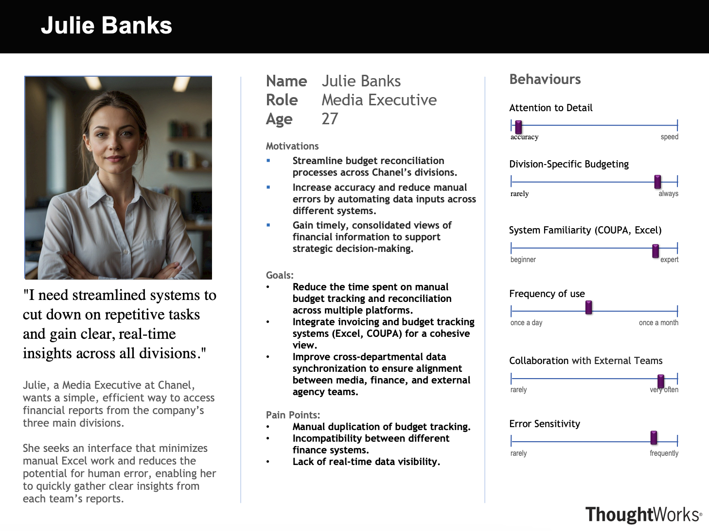

Project Requirements
Understanding the foundation of our system

Partner Introduction & Project Background
Our collaboration with Chanel Media began with the identification of a critical need to overhaul their financial reporting processes. Traditionally, the Chanel Media team spent approximately two weeks each month manually compiling extensive subcontractor reports—a process fraught with inefficiencies and a high risk of errors. This project aims to leverage advanced technological solutions to streamline these operations, significantly reducing the time and labor involved while enhancing accuracy and reliability.
Project Goals
The primary objective of this project is to develop a robust web application that automates the collection, organization, and analysis of financial data from various subcontractors. The application will feature an automated system for transforming raw data into structured budget-tracking spreadsheets and an interactive dashboard that provides real-time insights into spending. This hybrid approach will handle both structured and unstructured data sources, ensuring high accuracy through rigorous verification processes.
Requirement Gathering
To gather requirements effectively, we conducted several structured interviews and interactive sessions with the Chanel Media team to pinpoint their specific needs and expectations. Additionally, we circulated a comprehensive Google Form survey among key stakeholders to capture detailed input on their daily challenges and expectations from the proposed solution. The insights gained from these surveys were instrumental in creating accurate user personas and tailoring the application to meet user-specific demands.
Persona
The persona we developed through our requirement gathering process is Julie Banks, a Media Executive at Chanel. Julie represents the typical end-user who will benefit from the proposed system. Her persona encapsulates the needs and challenges faced by Chanel’s media team, emphasizing the necessity for streamlined operations to enable quick and accurate financial decision-making.
MoSCoW Requirement List
Based on the requirements gathered and the insights from our interactions with Chanel Media, we compiled a MoSCoW list to prioritize the development of the web application. This list helps in distinguishing between the 'Must have', 'Should have', 'Could have', and 'Won't have' features, ensuring that critical functionalities are developed and deployed first.
Functional Requirements:
| ID | Requirement | Priority |
|---|---|---|
| 1 | Automated Parsing of Spreadsheets for Budget Report Generation | Must Have |
| 2 | Export Functionality for Processed Budget Report | Must Have |
| 3 | Invoice Uploading with Automated Data Extraction | Should Have |
| 4 | Real-Time Expense Reconciliation from Multiple Data Sources | Should Have |
| 5 | Interactive Dashboard for Data Visualization | Could Have |
| 6 | AI-Powered Chatbot for User Assistance and Engagement | Could Have |
Non-Functional Requirements:
| ID | Requirement | Priority |
|---|---|---|
| 1 | High performance | Must Have |
| 2 | Robust security measures | Must Have |
| 3 | Reliable data processing | Must Have |
| 4 | Integrity checks | Must Have |
| 5 | Scalability to accommodate growing data volumes and user base | Could Have |